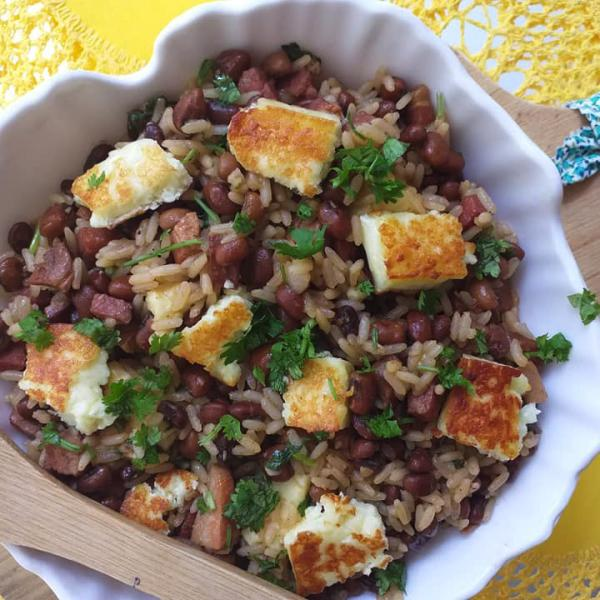

Baião de dois

- 1 quilo e 200 gramas de feijão de corda
- 4 xícaras de arroz parboilizado
- 3 cebolas grandes picadas
- 4 cabeças de alho
- 4 tomates maduros picados sem sementes
- 1 pimentão vermelho picado sem sementes
- 1 pimentão verde picado sem sementes
- 1 maço de cheiro verde
- 200 gramas de manteiga
- 2 colheres de sopa de colorau
- 300 gramas de carne seca desfiada
- Queijo coalho picado em cubos a gosto
- Coentro a gosto
Modo de Preparo
- Cozinhe o feijão com 1 litro de água na pressão por 30 min. Escorra a água e reserve
- Em outra panela, refogue uma parte da cebola e o alho com um pouco de óleo, acrescente o arroz, cubra com 7 ou 8 xícaras de água e cozinhe em fogo baixo até a água evaporar.
- Em uma vasilha, junte o restante da cebola picada, o tomate, os pimentões e o coentro. Reserve.
- Em uma panela de barro grande, acrescente a manteiga e o colorau.
- Em seguida, adicione os ingredientes da vasilha, tomate, cebola e pimentão, e refogue.
- Junte o feijão e o arroz e misture.
- Acrescente a carne de sol e o queijo coalho. Deixe o queijo derreter para dar a liga e sirva.
Retornar a Home